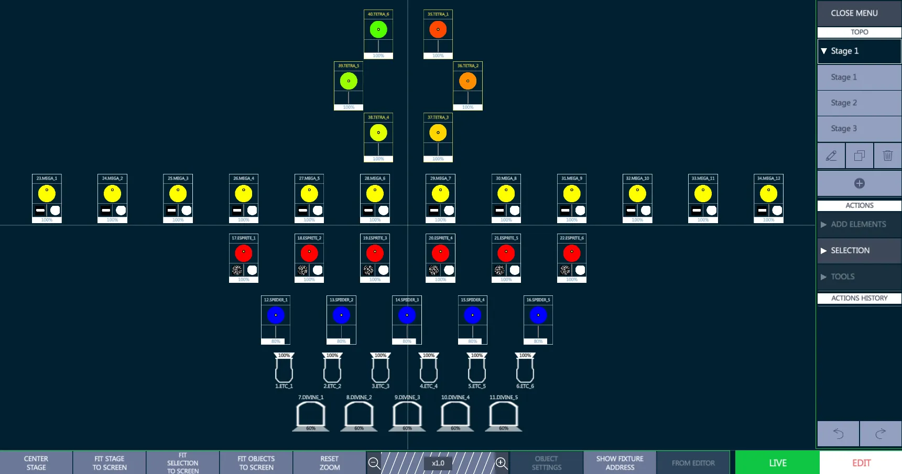
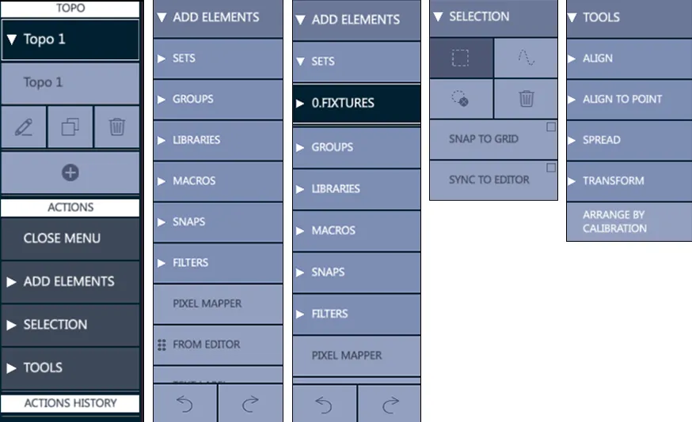
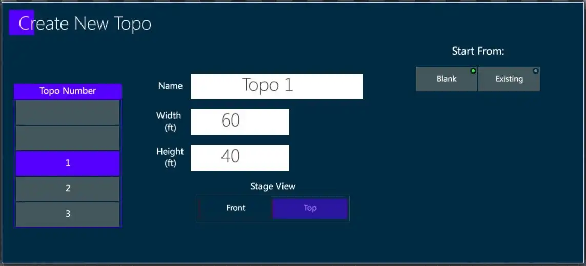
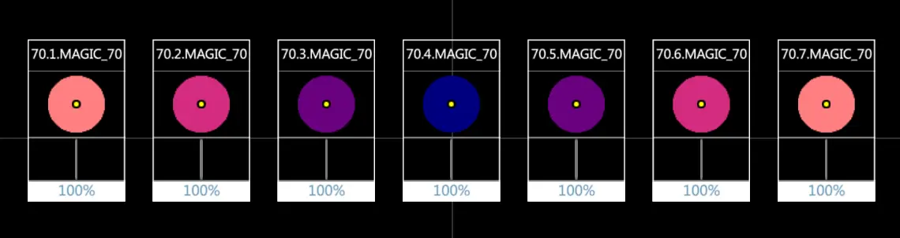
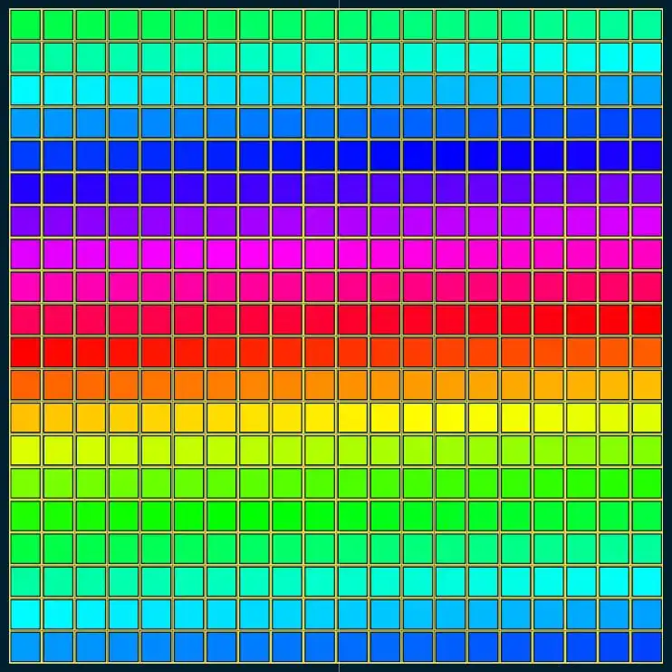
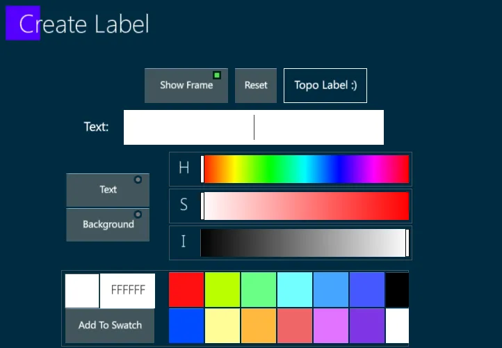
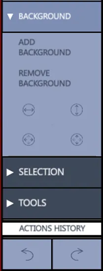

Chapter 15 Topo
This chapter deals with creating a Topographical Map to select the fixtures and trigger the objects.
The following is covered in this chapter:
15.1 Topo View
Topo is the short name for Topographical Display, it is a view used to make fast and intuitive the process of fixture selection and the triggering of stored objects.
Practical samples of some Topo applications can be:
show the light plan to other users (also as a patch-map for technicians),
make graphical fixture selections (and forget about fixtures IDs),
leave a smart interactive control screen to not-expert users,
check the fixtures live status on the stage and easily program offline.
When starting a new show any Topo view stored in the layout will be empty until the system is patched and fixtures are assigned to a Topo.
Virtually unlimited Topos may be created and displayed in a Topo view. Fixtures and objects may be shared by different Topos.

Topo views toolbar collects some visualization options to fastly center the stage and fit it to the screen, as well as an horizontal slider to zoom manually at the desired distance.
The {Show Address} / {Show Name} button toggles between the visualization of the patched addresses and the fixtures names on the icons.
The Topo view has 2 operating modes, switchable with the toggle button on the bottom right:
{LIVE}: Topo toolbar and menu get a Green frame. Enables fixture selection and object triggering, locks the Topo editing.
{EDIT}: Topo toolbar and menu get a Red frame. Enables all the Topo editing options, disables fixture selection and object triggering.
15.2 Topo Menu
The Topo Menu is a hierarchical menu that provides the tools for creating and editing Topos.
It provides the TOPO selection, with options to create, edit, duplicate and delete topos, and following sub-menus:
Add Elements
Selection
Tools

{Add Elements} - Accesses the available objects:
{Sets} Opens the filter of all available sets: Fixture, Channels, Spots, Matrix, Servers, and users created sets.
{Groups} Opens the filter of all available groups.
{Libraries} Opens the filter of all available libraries (Intensity, Position, Color, ).
{Macros} Opens the filter of all available macros.
{Snaps} Opens the filter of all available snaps.
{Filters} Opens the filter of all available filters.
{Pixel Mapper} Adds a User definable matrix to be used for Pixel Mapping.
{From Editor} Allows to Drag&Drop on the Topo the elements that are selected in Vibes editor.
{Text Label} Opens a popup to create a customizable text label.
{Line} Adds a customizable line.
{Background} Adds/Removes a customizable and adjustable background image.
{Selection} Accesses the selection options:
All types of selection must start outside of the fixture icons.
Rectangle: Selection by creating a rectangular shape, dragging from left to right or right to left to surround the target objects.
Lasso: Selection by creating a free-form path, dragging through the target objects.
Circle with X: De-selection of all selected icons all. The same operation can be done with a double tap on an empty area of the Topo.
Delete selected (only in Edit Mode).
Snap to Grid: Fixtures and object will snap to the nearest grid node.
Sync to Editor: Fixtures can be selected using the embedded keypad (only in Edit Mode).
{Tools} - Accesses the smart adjustment options:
{Align}: Aligns the selected elements horizontally to the left, center or right, and vertically to the top, middle or bottom. The alignment can also be set on a circular or a square shape and between two points it is possible to adjust the element location on the shape, the radius and the ending point.
{Align to Point}: A base point must be specified on the Topo surface as a starting reference. The options are the same as Align except there is no point to point.
{Spread} (Fan): Spreads the selected elements horizontally from the left, center or right, and vertically from the top, middle or bottom. When Spread is selected, a virtual modifier wheel will appear.
{Transform} - Modifies size and rotation of the objects to scale and rotate and to rotate of 45 degrees clockwise or counterclockwise. The last icon is to resets the transform options.
{Arrange by Calibration} - When tapped, selected fixture icons get their positions from the XYZ calibration.
15.3 Create Topo
To create a new Topo:
Navigate to a Topo view
- Tap the {+} key in the Topo Menu. - The Create New Topo popup will appear.

Select the desired Topo number, and give the Topo a unique name.
Enter the size of the Stage surface. The stage dimensions may be in be in Imperial or Metric. This default is set in the System Settings popup.
Select the stage point of view. The default is Top view.
Tap Apply or press [ENTER] - This closes the popup, enters Topo {Edit} mode, and the grid will be displayed.
15.3.1 Add Fixtures
There are two ways to add fixtures to a Topo
Using keypad selection:
Press zoom option {FIT STAGE TO SCREEN} on the toolbar at the bottom of the Topo View to see the whole stage area.
Select the fixtures using the keypad or a group.
Tap {FROM EDITOR} on the toolbar at the bottom of the Topo View.
Selected fixtures will now appear in the top right section of the Topo.
The fixtures will be selected (outlined in red), and can be dragged freely into place.
Double tap in a clear space on the TOPO to deselect.
If the {From Editor} key is selected with a long press (held for a few seconds) the fixtures may be directly dragged from the {From Editor} area. Only a maximum of 5 fixture icons will be shown but the whole selection will actually be there. Drag the fixtures to a location on the Topo view and drop. The fixture icons will now appear on the Topo surface. The reference point for dropping the fixtures is the top left corner of the dragged fixture icons.
Using {ADD ELEMENTS} from the Topo menu:
Create the Topo
From the Topo menu tap {ADD ELEMENTS}
From the drop down, tap {SETS}
From the next drop down, select a fixture set - A list of the fixture in the set will drop down.
From the fixture list, select the fixtures to drag onto the Topo.
Press, hold and drag the fixtures onto the Topo surface.
Double tap in a blank area of the Topo to deselect the fixtures.
Add Sub Devices to the Topo View
Topo view supports the fixture layers, so sub-devices of a fixture (for example 70, such as fixture 70.1 -> 70.7), can be added as independent objects.

15.3.2 Add Softkeys
There is an option to add softkeys of any type to the Topo with dragging and dropping items from the menu.
Using the same methods for adding fixtures to the Topo, drag the objects into the grid.
Softkey objects that can be currently added to the Topo include:
Groups
Libraries
Macros
Snaps
Filters
Softkey object icons can be arranged on the Topo in the same way the fixture icons are.
15.3.3 Add Pixel Maps
The pixel mapper creates a matrix of fixtures.
The aspect ratio of the pixel map is controlled by the number of columns and rows that are created. Matrix fixtures may be selected by blocks using the rectangle or the lasso selection tools.
Create a new pixel mapper:
From the Topo Actions menu, tap {Add Elements}
From the {Add Elements} drop down, tap {Pixel Mapper} - The Create New Pixel Mapper popup will appear.

Fill in the number of columns and rows and set the start position and direction.
Press [ENTER] or tap Apply to close the popup and create the blank pixel map.
Currently, the pixel map will appear in the top right corner and in some cases, a zoom out will be needed to find the pixel map and drag it back to the desired location..
Using the same methods for adding fixtures to the Topo, drag the fixtures into the pixel map matrix.
Release the fixtures and they will populate the pixel map. The number of fixtures must not exceed the number of pixel mapper cells..
The populated matrix in {Edit} Mode will display the fixture numbers in each cell. In {Live} Mode, the fixtures color mix will be shown. CMY, RGB, and HSV color spaces are supported.

Multiple pixel mappers may be added to the same Topo along with other objects.
The current Pixel Mapper is for the selection of fixtures and displaying of live output but future versions will add the ability to map content to individual pixel maps.
15.3.4 Add Text Labels
Text labels of any color can be added don the Topo, for example to put notes, descriptions, or important information.
Create a new text label:
From the Topo Actions menu, tap {Add Elements}
From the drop down, tap {Text Label} - The Create Label pop-up will appear.

Close the pop-up and the test label will appear on the Topo surface.
Drag the label to the desired location.
Transpose tools may be used to size and rotate the label.
15.3.5 Add Background
Backgrounds images, such as studio layouts, renderings and rig elements, may be added to the Topo.
Add a new background:
Prepare a USB stick with a JPEG, BMP, or PNG file content.
Insert the USB stick into one of the Vibes USB ports.
Tap {Add Elements} on the Topo menu.
Tap {Add Background} - A browser popup will appear.
Select the USB stick and click on the desired content - Once imported, the content may be found in the default local directory on the hard-drive under D:
Tap {Load}, [ENTER] or tap Apply to close the popup and place the content as a background to the Topo.
Remove a background:
Tap {Add Elements} on the Topo menu.
Tap {Remove Background}.
Edit a background:
Topo background images can be edited in size and position, through the tools under the Add/Remove Background buttons.
